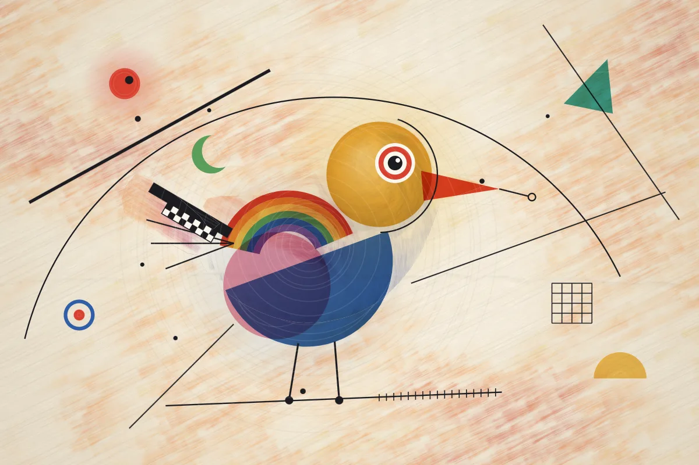

A seed decides the picture
Every random choice reads the seed. The same seed draws the same picture on any machine; a new seed draws another. Both sheets here share one.
A JavaScript library and agent skill
One seeded piece draws a page, a PNG, an SVG and a film with sound, and each file carries the recipe that redraws it.
Install it, then ask your agent for a piece.
One piece, five ideas
Each widget below is the same small piece, drawn live. The code beside it is cut from that piece's file when the site is built.
Every random choice reads the seed. The same seed draws the same picture on any machine; a new seed draws another. Both sheets here share one.
A piece draws any moment from its playhead, 0 to 1. Drag it back and the pen lifts its lines again; nothing is recorded.
A piece declares its parameters, each with a range and what it changes. Every control a page shows comes from that declaration.
A piece that declares the boxes it takes is laid out again for each one. Widen it or narrow it: the lines are solved for the new box, never stretched.
The same piece saves as a PNG, an SVG or a film. Each file carries its recipe: the piece, the seed and the parameters that draw it again.
The showcase
A pen writes the name, the ink blooms, cracks, turns to a kaleidoscope, a blueprint, papercraft, a painting and a box that takes your window's shape. Every frame is drawn live from a seed and a playhead; turn Listen on to hear it.

Enter the filmInstall
Artifex installs as a plugin. Pick your host, copy its lines, then ask your agent for a piece in plain words.